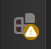
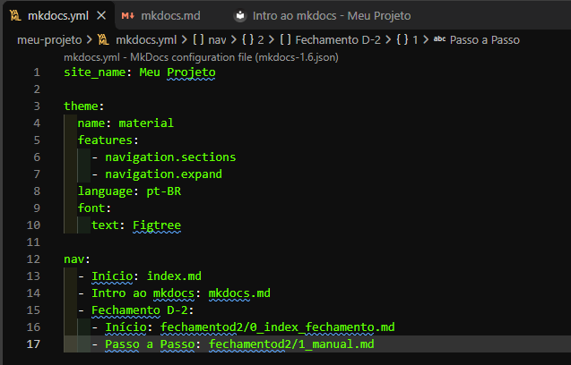

Introdução à biblioteca MkDocs
O MkDocs é um gerador de sites voltado para documentação. O conteúdo é escrito em arquivos Markdown (.md), que permitem alta flexibilidade e versatilidade para diagramação de texto, e a estrutura é feita em um único arquivo de configuração (.yml).
Como utilizar o MkDocs?
Instalar Python e VS Code
Após instalar o VS Code, é necessário instalar as extensões (Ctrl+Shift+X ou

):- Python (Microsoft)
- Markdown All in One - opcional, mas ajuda a escrever Markdown
- YAML (Red Hat) - opcional, mas ajuda a apontar erros de indentação no arquivo yml
Criar pasta do projeto e ativar ambiente virtual
- Crie uma pasta no seu diretório de escolha e, no VS Code, vá em Arquivo > Abrir Pasta e selecione a pasta criada.
- Abra o terminal integrado com
Ctrl+'e ative o ambiente virtual (python -m venv .venv) - Em seguida,
.venv\Scripts\activate - Selecione o interpretador no VS Code:
Ctrl+Shift+Pe digite Python:Select Interpreter - Escolha o que tem
.venv
Instalar o MkDocs
Com o ambiente ativado, digite no terminal:
python -m pip install --upgrade pip
pip install mkdocs-material
Estrutura inicial do site
Ao digitar mkdocs new . no terminal, o comando cria a estrutura básica modelo de um site, que consiste em um arquivo chamado mkdocs.yml e uma pasta docs/ com um índice padrão chamado index.md.
mkdocs.yml
O arquivo .yml recebe toda a configuração do site: linguagem, fonte, tema, hierarquia das páginas etc. Novas páginas .md podem ser criadas conforme a necessidade e o conteúdo a ser disponibilizado, devendo ser referenciadas no arquivo .yml para serem renderizadas no site.

No exemplo acima, o theme configura alguns parâmetros básicos do tema do site, como a linguagem e a fonte utilizadas. Já nav determina a estrutura das páginas, sendo possível também criar novas pastas dentro de docs/, criar os arquivos .md desejados dentro de cada uma para melhor organização, e depois referenciá-las na navegação. A pasta fechamentod2 possui dois arquivos: 0_index_fechamento.md e 1_manual.md.
Arquivos markdown
O conteúdo a ser disponibilizado no site é registrado em arquivos Markdown (.md), que é uma forma simplificada de formatar texto usando programação simples, sem a necessidade de botões de editor ou de HTML.